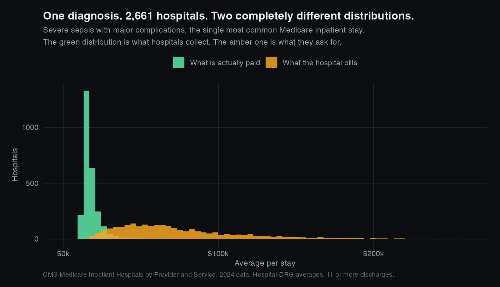
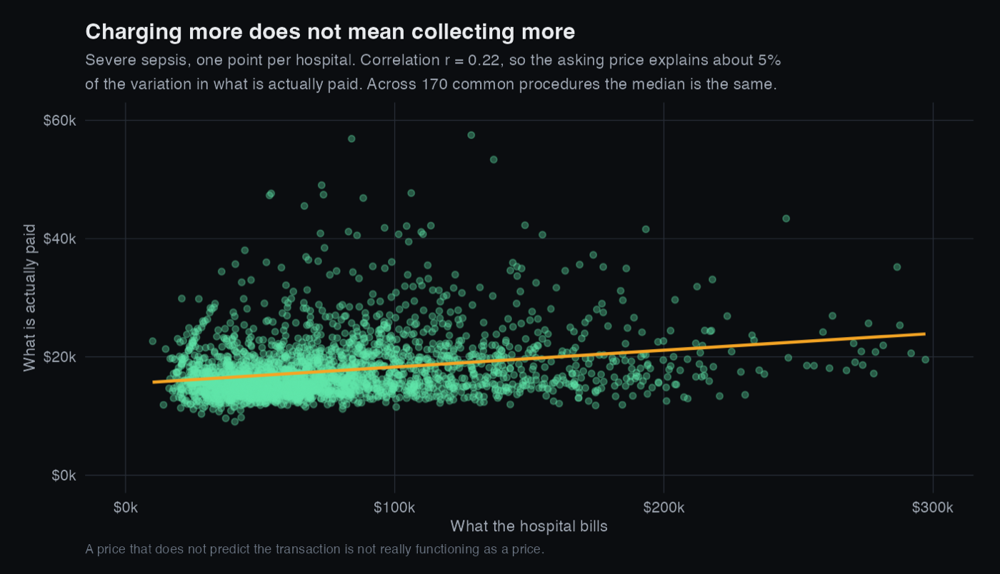
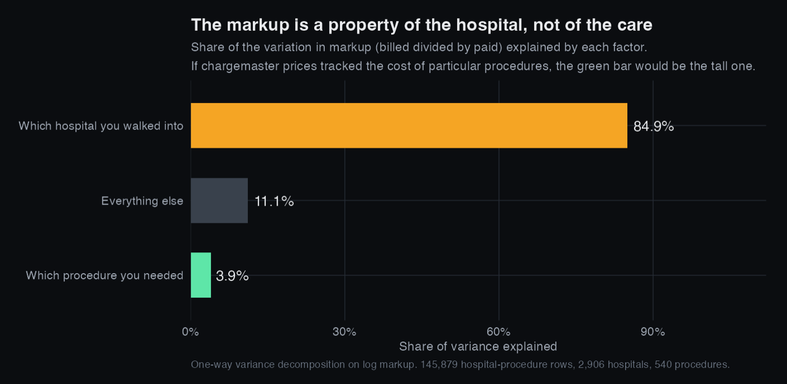
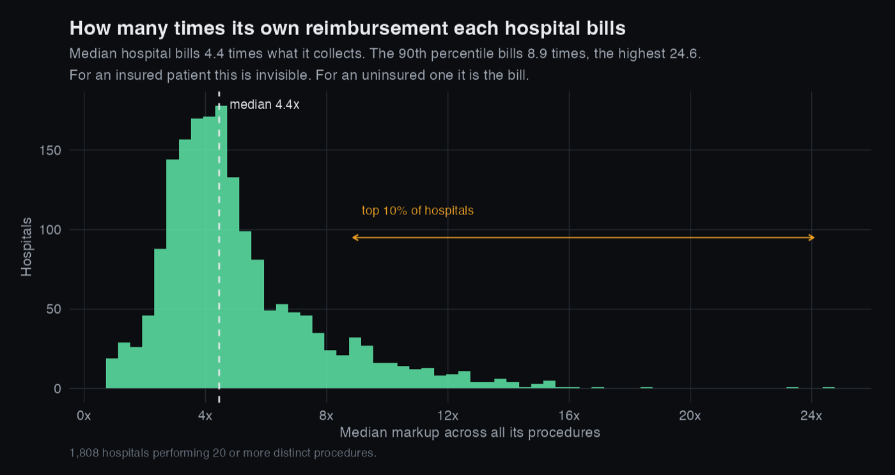

The Price That Isn't One
Every American hospital publishes what it charges. That number decides what an uninsured patient owes and where an out of network dispute begins. Across 2,906 hospitals and 540 procedures, it turns out to carry almost no information about the care, and almost all of the information about which building you walked into.
Why this dataset can answer the question
Most price data gives you one number and no way to check it. This one gives you two, for the same care, at the same hospital, in the same year.
- The charge. What the hospital billed. The chargemaster price.
- The payment. What was actually collected, from all sources.
Having the asking price and the transaction price side by side, for identical procedures across nearly every hospital in the country, is what makes it possible to ask whether the asking price means anything.
The same illness, priced 2,661 different ways

Does charging more mean collecting more?
If the listed price meant anything, hospitals that charge more for a given procedure would collect more for it. Within each of the 170 procedures common enough to test, they do not.
The median correlation between what a hospital bills and what it is paid, for the same procedure, is r = 0.25. The asking price explains about 6% of the variation in the transaction price.

So what is the number actually measuring?
If chargemaster prices tracked the cost or complexity of particular procedures, then knowing which procedure someone had would tell you most of what you need to know about the markup. If instead each hospital picks a multiplier and applies it to everything, then knowing which hospital would.
Those are testable, and they are not close.
84.9% of the variation in markup is explained by which hospital it was. 3.9% by which procedure. The markup is a property of the building, not of the care delivered inside it.

Who this lands on

If you have insurance, none of this reaches you, because your insurer pays a negotiated rate and the chargemaster is scenery. If you are uninsured or out of network, it is the bill. Two patients receiving identical care, reimbursed almost identically, can be billed 3.4 times differently depending on which hospital they were taken to.
What this does not show
There is an obvious objection to all of this and it deserves a straight answer rather than a footnote.
Medicare's payment is set by formula, so of course it varies less. It is a DRG weight multiplied by a base rate and adjusted for local wages and teaching status. Low variation is partly by construction, so I am not arguing that payments are stable and therefore charges ought to be.
The claim is narrower and survives that objection. The formula encodes the only cost basis anyone in this system agrees on, including case mix and local wage differences. The asking price is essentially uncorrelated with it, and the variation that remains organises itself by hospital rather than by procedure. Whatever the chargemaster is measuring, it is not the care.
Three further limits:
- These are hospital-procedure averages, not individual bills. A hospital with a wide mix of case severity inside one DRG will look different from one without.
- Only Medicare inpatient stays. Outpatient care and commercial insurance behave differently, and commercial negotiated rates are where most of the money actually is.
- CMS suppresses cells under 11 discharges, so every row here is already an average of at least 11 stays. That is deliberate: below that, a hospital's average is a small sample rather than a measurement.
What I would do next
- Join hospital ownership, system membership and quality ratings to test whether markup tracks anything a patient might reasonably care about, or whether it tracks market concentration.
- Bring in the hospital price transparency machine readable files, which carry commercial negotiated rates and would show whether the same pattern holds where the real money is.
- Compare across years to see whether the 2021 transparency rule moved any of this, which is the natural experiment sitting inside the policy itself.